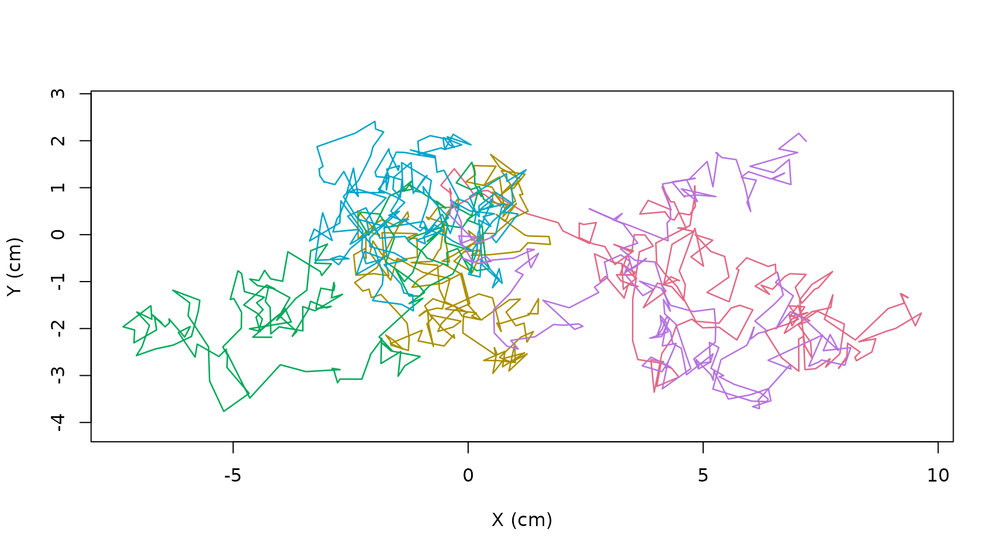

Get started with AquaTrajectories
Source:vignettes/articles/aquaTrajectories.Rmd
aquaTrajectories.RmdGet started
AquaTrajectories is an open-source research software toolkit for
aquatic movement and multiview trajectories. The public package is named
aquaTrajectories (lowercase a); the repository
is named AquaTrajectories.
Published release: v0.1.1, archived on Zenodo. This is a normal GitHub software release, not an assertion of independently verified fish identity or underwater physical accuracy. The separate 0.1.2 CRAN candidate should not be installed as a public CRAN release before CRAN acceptance.
Install from GitHub
install.packages("remotes")
remotes::install_github("stefanosbalaskas/AquaTrajectories", ref = "v0.1.1")
library(aquaTrajectories)
packageVersion("aquaTrajectories")R 4.1 or later is required. Optional modules can require separately
installed rgl, nlme or fdapace.
Python video tracking needs externally supplied fish-trained detector
weights and its separately documented runtime.
What the whole pipeline looks like

Conceptual software dataflow. No biological data or benchmark performance is depicted.
Your first movement analysis
The code below uses the package’s built-in synthetic random-walk simulator. It is suitable for learning the API, not estimating biological fish behaviour.
library(aquaTrajectories)
set.seed(406)
x <- aqt_simulate_tracks(n_fish = 5, n_frames = 200)
aqt_plot_paths(x)
Compute observed kinematics and group summaries:
kin <- aqt_kinematics(x, max_gap_s = 0.1)
school <- aqt_group_metrics(x, max_gap_s = 0.1)
utils::head(kin)
utils::head(school)The max_gap_s threshold prevents a long tracking dropout
from being treated as one continuously observed swimming segment.
Record and align an event
event <- aqt_event_table(data.frame(
session_id = "S01",
event_id = "routine_event",
start_s = 3,
end_s = 4
))
aligned <- aqt_align_events(kin, event)Event labels come from an external log. Merely aligning trajectories to a time interval does not prove that the intervention caused a change.
Five-minute self-check
For a guided script with checkable output shapes and CSV exports, follow the five-minute quick start. For input file schemas and a reproducible tank-event example, use the experiment starter kit.
Non-negotiable research assumptions
- Camera-local track numbers are not permanent biological animal identities.
- Missing 2D depth is unknown, not zero.
- A low stereo reprojection residual does not establish correct identity or physical metrology.
- Frames and fish nested in one experimental tank do not replace independent tank replication.
- HMM state labels and movement features do not independently establish stress or welfare.
- Measurement-perturbation intervals are conditional sensitivity summaries unless empirically calibrated.
Read the scientific status and limitations before using outputs in publications.